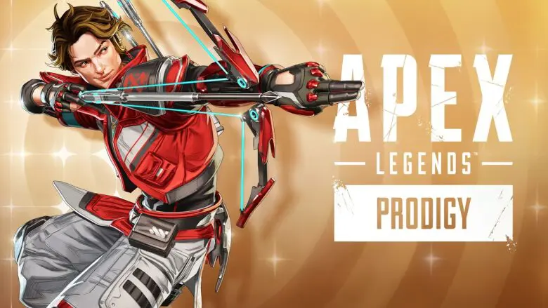
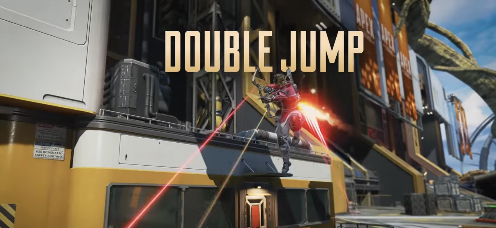
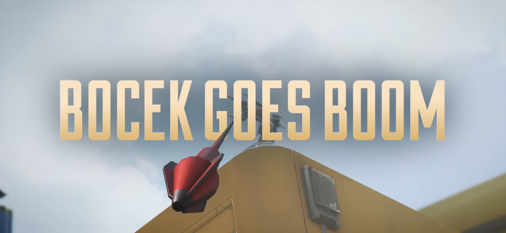
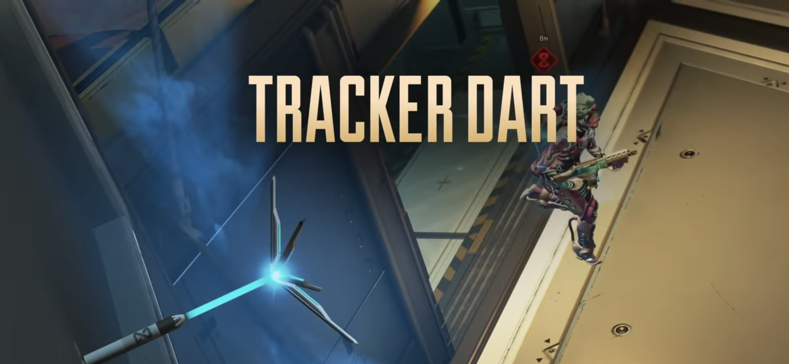
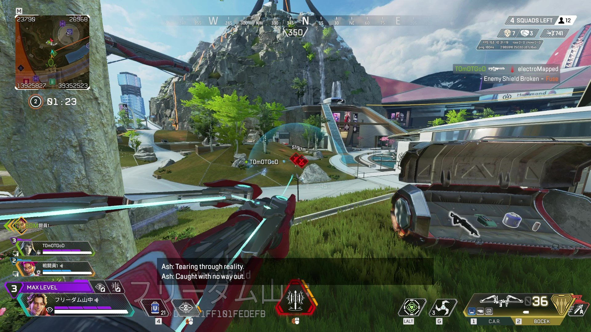
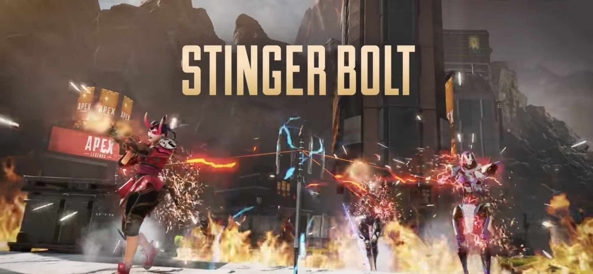
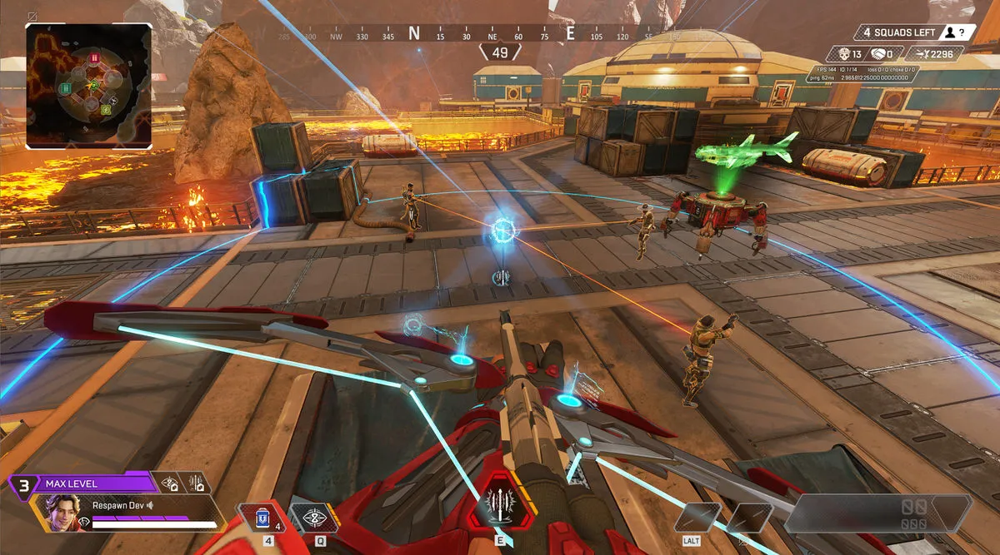

5月7日から始まるシーズン25「PRODIGY」で
神童と呼ばれる若き弓使い
スパロー
が登場!!!

◾「スパロー」徹底解説
【パッシブ】
ダブルジャンプ

- ・パッシブ「ダブルジャンプ」は名前の通り通常ジャンプの後に追加ジャンプができる
- ・クールダウンは着地から1.5秒で連続してジャンプは行えない
- ・スパローは壁登り中のジャンプが他のレジェンドよりも高くダブルジャンプと組み合わせると高所まで登りやすい
- ・縦方向の機動力に優れたレジェンドなので高所を取りながら戦いやすい
- ・ダブルジャンプ後は着地するまでスパローの背中から軌道エフェクトが発生する
遠くから見えやすいので注意
ボセックでの戦いが有利に

- 新シーズンではボセックが地上アイテムとなりボセック本体に40発分が最初から付属する形になる。
- ・スパローがボセックを拾うと追加バフで弾数が40→50に増加しフラグをチャージした爆発矢を7→8発撃てる
【戦術アビリティ】
トラッカーダート

- ・戦術「トラッカーダート」は矢が着弾した場所に展開し矢から視認できる半径16m以内に侵入した敵をスキャンする
- ・スキャンされた敵は頭上に赤いアイコンが表示され約3秒間位置と距離を特定できる
- ・その後約12秒間痕跡エフェクトが発生し敵の移動方向が壁越しにも見えるようになる
- ・トラッカーダートは3発のリチャージ式で1発のクールダウンは30秒
- ・上限5発までその場に残し続けることができ6発目以降は古い順に消滅する
- ・トラッカーダートが着弾して最初から敵が範囲内にいた場合、その範囲内のすべての敵をスキャンする
- ・トラッカーダートは敵に直撃させても刺さらずに落ちるがわずかなダメージを与える
- ・トラッカーダートを調査ビーコンのそばに着弾させると即起動してマップ全体の敵の位置を把握できる
- ・トラッカーダートはおよそ10HPで非常に脆くほぼすべての武器で1発で破壊できる
- ＜注意＞
- ・ミラージュのデコイは誤検知してしまう
- ・バンガロールのスモーク内の敵は外からスキャンできない
- ・カタリストのフェロバリケードの反対側にいる敵はスキャンしてもアイコンやエフェクトを視認できない
- ・ワットソンのインターセプターパイロンには追撃されてしまう

【アルティメット】
スティンガーボルト

- ・ULT「スティンガーボルト」は矢が着弾した周囲を索敵した後矢から射線が通っている敵を連続攻撃する
- ・発射すると最初は着弾地点から半径20mの敵を壁越しにスキャンし3秒間シルエット表示する
- ・矢から射線が通っている敵に1発20ダメージの衝撃波を6回発射しスロウ効果を付与する
- ・ランパートのバリケードなどのオブジェクトに対しては100ダメージを与えて敵の防衛地点を破壊する
- ・直撃と着弾時にもわずかにダメージがあり1発のクールダウンは180秒
- ・展開されたスティンガーボルトは武器で破壊することができず敵は遮蔽物に隠れるしかない
- ・バンガロールのスモークやカタリストのフェロバリケードに隠れても衝撃波はヒットする
- ・ジブラルタルのドームシールドなど壁となるガジェットを間に挟むと衝撃波は防がれる
- ・クリプトはドローンEMPで無効化は可能だが衝撃波がドローンを破壊する
- ・戦術と同様にワットソンのインターセプターパイロンには追撃されてしまう

【パーク】
Lv2パーク選択(戦術アビ強化)
- ⚪︎エキストラ・トラップ
- ・戦術アビリティの追加チャージ+1
- ・マップ上におけるトラップ+2
- ⚪︎ハントターゲット
- ・マークした敵に向かって走る時のスピード上昇
Lv3パーク選択(ULT強化)
- ⚪︎ライフ・サイフォン
- ・アルティメットで敵にダメージを与える度にスパローは20回復
- ⚪︎オルタネート・モード
- ・ULTをクールダウン90秒の3発リチャージ式に変化（元は180秒）
- ・代わりに効果範囲が狭くなり衝撃波の回数は3回になる。(元は6発)
TOPへ